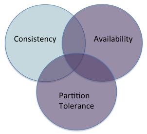

Source: CAP Twelve Years Later

So long as there are no network partitions (most of the time), a system can be strongly consistent and available:
Strongly consistent: The users cannot tell if the system is one instance or multiple instances
Available: Every user can do every possible operation
It won’t come free—there will still be latency costs to sustaining the illusion of a single system
Update messages between the instances
Waits for multiple synchronous writes to occur to replicas
Limited by the slowest instance
The number of write instances will typically be much smaller (1-3) than the number of compute instances we considered in large-scale computation (1000s)
The problem of one very slow instance remains
Every service request has a time out
If request does not complete within time out bound, the client must respond
Might retry one or more times, but when the final retry times out?
The partition decision: How your code responds to timed-out requests determines whether your system is strongly consistent or available:
Keep retrying (maybe with longer time out limits) until requests start working (give up availability but remain strongly consistent); or
Enter partition mode, continue serving the user (give up strong consistency but remain available)
Each client makes its own decision about “partition”. One client can see a partition while another client does not.
How long do we set the time out value?
Short (100s of ms)—we assume a failure quickly
Long (seconds)—takes time to detect a failure
Longer latencies
Fewer partitions
If we abandon the requirement that all users see the same order of updates (strong consistency), what do we gain?
Greater scalability
Lower latency
Partition tolerance
“Eventual consistency” is an ambiguous promise: If you stop updating the system, and wait “long enough”, the system will converge on “some value”—every user will eventually see the same value.
Trivially (but uselessly) achievable by returning an arbitrary value to every query (answer every question, “42”)
More usefully, is the application able to occasionally converge to an out of date value?
Or could your service return multiple values, letting the user pick the most useful one?
Those are the best you can do after a partition
In the general case, you cannot guarantee that your system will converge to a single, latest value
Some specialized operations do permit this guarantee (See CALM theorem and Converget Replicated Data Types, CRDTs)
But you will not be able to build a full application using only these operations
So you’ll have to make some hard decisions
An application typically has business rules it must maintain
A bank account cannot be negative
A flight cannot carry more passengers than seats
These imply invariants across your data structures
Relational database systems offer key constraints to ensure some invariants
You can’t guarantee the invariants if you keep running while partitioned
But in many cases you have compensation strategies
Banks permit an ATM to dispense small amounts (up to $200, say) when they are cut off from the server
If customer overdraws, bank adds service charge
Airlines routinely overbook flights
Rare for every passenger to show up
If too many show up, offer free tickets to the ones willing to wait for a later flight
When designing for partitioned operations, which invariant violations can you compensate, which invariants must you never violate?
OK to send someone two copies of a book
Probably not OK to give patient twice their drug dosage
Read Distributed systems for fun and profit, Chap. 5: up to but not including “Replica synchronization: gossip and Merkle trees”.
Important points: “Eventual consistency with probabilistic guarantees”—this is the normal definition of eventual consistency.
Points not important to this course: “eventual consistency with strong guarantees” (CRDTs and CALM)—this remains a research topic, with few to no applications built using this concept.
Important section: Reconciling different operation orders